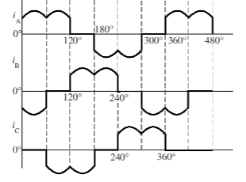

Retificador Trifásico Controlado de Onda Completa em Ponte (Seis-Pulsos)
O retificador trifásico de onda completa em ponte (denominado seis-pulos), é mais usado em como um conversor de alta potencia no ramo da eletrônica de potência. Ele é projetado como dois retificadores trifásicos de três pulso ligados em serie, onde os SCR 1, 3 e 6 são o grupo positivo, e os SCR 4, 6 e 7 são o grupo negativo, o grupo positivo atua apenas no semiciclo positivo, o inverso com o grupo negativo. Para esse sistema fornecer um caminho para a corrente, é necessário com que dois SCR trabalhem em conjunto no mesmo ciclo, formando dois pulsos separados por 60°. Quando um elemento do grupo positivo e negativo conduzem, a tensão de linha é aplicada diretamente na carga. Um exemplo, se SCR3, e SCR2 conduzem de maneira simultânea, então a tensão de linha Vbc é aplicada a carga, tendo a corrente e a tensão controladas pelo ângulo de disparo dos SCRs.

Carga resistiva (indutiva e diodo de retorno)
Para obter uma análise simples das formas de onda desse modelo de retificador, é necessário somar as tensões de saída de cada grupo. Se os SCRs são adicionados no momento em que a tensão tende a se tornar positiva na direção direta, então o circuito funcionará como um retificador em ponte a diodo. O ângulo de disparo (alpha) de cada SCR é medido a partir do ponto de cruzamento de sua respectiva tensão de fase. Considerando o intervalo de 0° a 120°, quando o SCR1 atinge o seu pico mais positivo e fica diretamente polarizado, ele conduzirá até o ponto 1 em A. O SCR3 agirá da mesma maneira, conduzindo de 120° a 240° e conectando o ponto 1 a B, repetindo o ciclo até o ponto 1 em C, onde a tensão (V1n) se torna o pico mais positivo entre as tensões de fase Van, Vbn e Vcn. No grupo negativo sobre o terminal 2, o SCR4 está conectado à tensão de fase negativa durante o intervalo de 180° a 300°, conduzindo o ponto 2 em A. O SCR6 agirá de maneira semelhante, conduzindo de 300° a 420° e conectando o ponto 2 em B. Portanto, de 60° a 180°, o ponto 2 ficará unido em C, onde a tensão (V2N) é o pico mais negativo das tensões de fase Van, Vbn e Vcn. A tensão de saída V0 é dada pela subtração entre V1N e V2N.
As formas de onda consistidas pelo sistema de seis-pulsos, tem menos ondulações nas tensões de linha de entrada, tendo uma tensão de ondulação de saída seis vezes a frequência AC na linha e o dobro da amplitude do retificador de três-pulsos. Cada SCR conduz de 120° a 240° por cada ciclo. Compensado pelo funcionamento de dois SCRs ao mesmo tempo por ciclo, estabelecendo uma sequencia de fase como ABC, onde suas ordens de disparo são SCR1 E 2, 2 E 3, SCR3 e 4, 4 e 5, SCR5 e 6 e assim seguindo esse ciclo.
É importante ressaltar que o SCR deve ser capaz de bloquear as tensões diretas, amplitude dessa tensão depende do ângulo de disparo. Quanto maior for, maior será a tensão direta que o SCR deve bloquear. As correntes de cada SCR pode ser definita pela Lei de Kirchhoff das correntes (KCL)
Carga resistiva e indutiva (sem diodo de retorno)
Nesse sistema, a falta do diodo de retorno proporciona uma maior indutância, fazendo com que a corrente de saída se torne linear, aproximando-se a uma curva DC pura. A tensão de saída é sempre positiva (0° ≤ Alpha ≤ 60°), a corrente de saída e tensão de saída é a mesma se a carga for indutiva ou se houver um diodo de retorno. Se 60° ≤ Alpha ≤ 90°, a tensão de saída diminui e torna-se zero para Alpha ≤ 90°. Quando a tensão e a corrente de saída são positivas, o fluxo de potencia vai da fonte AC a carga DC. Se o ângulo de retardo for maior que 90° ≤ alpha ≤ 180°, a tensão de saída DC mudara de sinal, se tornado um inversor, até que a tensão atinja o seu menor valor negativo, transferindo potência do lado da carga para a fonte.
Carga resistiva e indutiva (sem diodo de retorno)
Nesse sistema, a falta do diodo de retorno proporciona uma maior indutância, fazendo com que a corrente de saída se torne linear, aproximando-se a uma curva DC pura. A tensão de saída é sempre positiva (0° ≤ Alpha ≤ 60°), a corrente de saída e tensão de saída é a mesma se a carga for indutiva ou se houver um diodo de retorno. Se 60° ≤ Alpha ≤ 90°, a tensão de saída diminui e torna-se zero para Alpha ≤ 90°. Quando a tensão e a corrente de saída são positivas, o fluxo de potência vai da fonte AC a carga DC. Se o ângulo de retardo for maior que 90° ≤ alpha ≤ 180°, a tensão de saída DC mudara de sinal, se tornado um inversor, até que a tensão atinja o seu menor valor negativo, transferindo potência do lado da carga para a fonte.